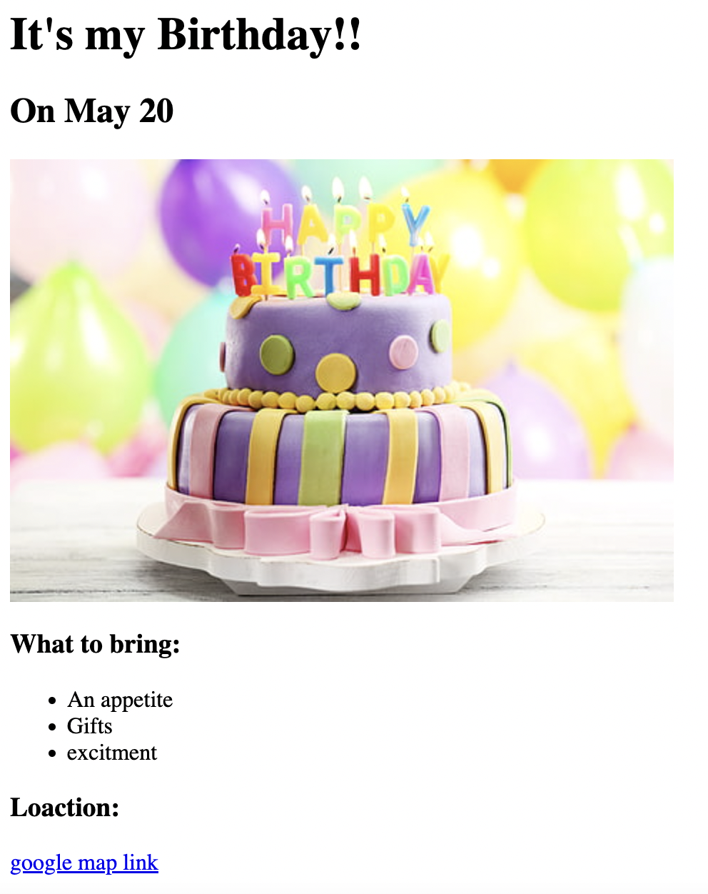

<!DOCTYPE html>
<html lang="en"></html>

<head>
    <meta charset="UTF-8">
    <Title>Emmanuel's Portfolio </Title>

</head>
    <body>
        <H1>Emmanuel's Sauceda Portfolio</H1>
        <Hr>
        <H2><U>Aspirations:</U></H2>
                <p><Li>Get a <B>Bachelor's Degree</B> in Computer Science</Li>
                <Li>Become a <i>role model</i> for others</Li>
                <Li>Help create something significant in the coding industry</Li>
                </p>
            </UL>
        <H3><U>Introduction</U></H3>
        <p>Hello my name is <I>Emmanuel Sauceda</I>, I am currently 20 years old. For the past 2 years I have worked at <B>O'reilly Auto Parts</B> where I many skills that I use now on the day to day basis. Some of the skills I learned involve managerial skills along with problems solving skills. Some of my current interest are acquiring a bachelor's degree in computer science as well as moving out of my town in search of better job opportunities and see what the world has to give. </p>
        <h3><U>Projects</U></h3>
            <p><a Href="./movie-ranking.html" > Favorite Series project</a></p>
            <P></P>
            <p><a href="./birthday-invite.html">Birthday Invitation Project</a></p>
            <p></p>
        <H3><mark>Education and Experience</mark></H3>
            <p>As for my education, I have completed up to Sophmore year in Arizona Western College until recently were I transfered into NAU and this being my first year attending NAU. I haven't have much exposure to the coding world eventhough it is what I am studying but I am definitley looking into getting more action in the industry. While in high school I did to take to trips over to different Universities to study and learn new material as part of the <u>CTY Program</u>. Taking thos trips helps me decide what I wanted to study which is why I decided to get into Computer Science.  </p>
        <Hr>
       <a href="./contact.html"> Contact me  </a> 


    </body>

